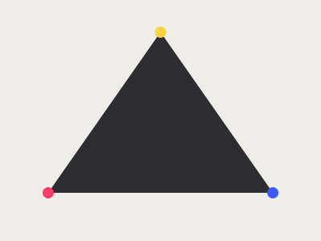
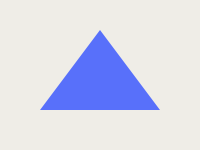
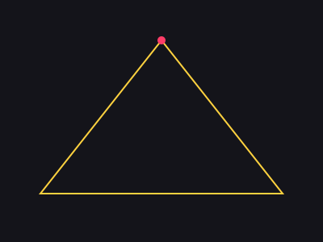
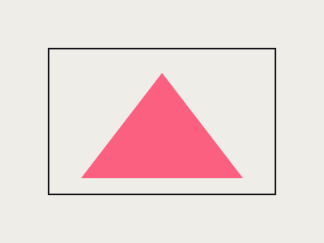

Editorial cover — Cauce Magazine

Cover for Cauce Magazine's special issue on new voices in Latin American design. The triangular composition resolves the tension between three ideas from the issue — origin, craft, and future — into a single, fast-reading image.
Process
I explored several composition options before landing on the triangle as the organizing shape: it let me place the issue's three concepts without visual hierarchy between them, and worked equally well on the printed cover and the square crop used for social media.
Result
The cover was printed in the magazine's anniversary issue and reused as the main graphic piece in the launch campaign across social media.


